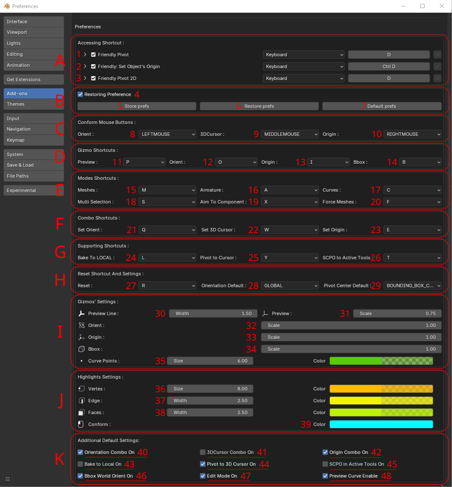

Addon's Preferences
Preference window helps to adjust FP addon:

In 'A' block you can setup invoke keys:
1. for SCPO addon operator
2. and for Center origin operator
3. and for SCPO 2D(UV Editor) operator
In 'B" block:
4. Activate preferences restoring
5. Store current settings to disk
6. Restore settings from disk
7. Set all settings default
'C' block is for adjusting main comform buttons:
8. Set conform button for Pivot orientation
9. Set conform button for 3D Cursor
10. Set conform button for Origin
'D' block is for setting up gizmo shortcuts:
11. Set key for Normal Preview Gizmo
12. Set key for Orientation Gizmo
13. Set key for Origin Gizmo
14. Set key for Bounding Box Gizmo
'E' block contains shortcuts settings for the addon modes:
15. Set key for 'Mesh mode' for filtering scene meshes
16. Set key for 'Force Armature mode' for filtering scene bones
17. Set key for 'Force curve mode' for filtering scene curves
18. Set key for Multi Selection mode
19. Set key for Aim To Component mode
20. Set key for 'Force meshes mode' for filtering meshes without faces (WARNING! mode works with errors now)
'F' block is for Combo shortcuts:
21. Set key for Combo Orientation
22. Set key for Combo 3D Cursor
23. Set key for Combo Origin
'G' block is for setting up supporting command shortcuts:
24. Set key for 'switching ON/OFF baking orientation to LOCAL
25. Set key for 'switching ON/OFF moving Pivot to 3D Cursor
26. Set key for 'switching ON/OFF SCPO into Active Transform Tools settings
In 'H' block you can:
27. Set key for Reset Orientation and Pivot Center
28. Set default Orientation
29. Set default Pivot Center
'I' block setup sizes, scales, colors of gizmos:
30. Set preview gizmo width
31. Set preview gizmo scale
32. Set Orientation gizmo scale
33. Set Origin gizmo scale
34. Setup BBox Gizmo dots' scale
35. Adjust size and color of curves' points
'J' block adjusts color and size of component highlights:
36. Adjust size and color of vertex component
37. Adjust width and color of edge component
38. Adjust width and color of face component
39. Adjust conform color
'K' block stores default settings:
40. Switch default ON/OFF for Orientation Combo
41. Switch default ON/OFF for 3D Cursor Combo
42. Switch default ON/OFF for Origin Combo
43. Switch default ON/OFF for baking orientation to LOCAL
44. Switch default ON/OFF for moving Pivot to 3D Cursor when conform the last one
45. Switch default ON/OFF for SCPO into Active Transform Tools settings
46. Switch default ON/OFF for BBox world orientation(When OFF only Local exists)
47. Switch default ON/OFF remain 'Edit Mode' when addon's invoked
48. Switch default ON/OFF for preview curve points